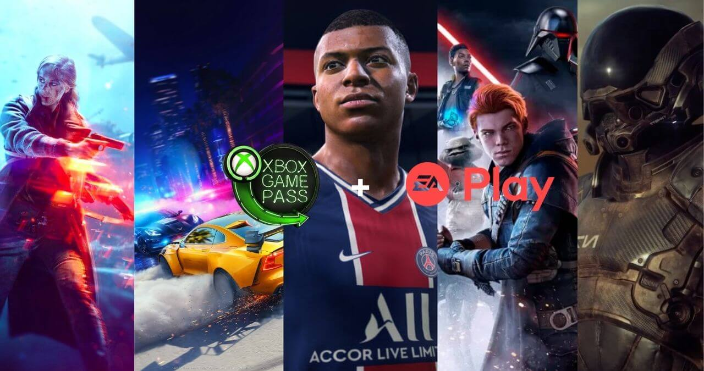

Sua Grande Locadora de Games
O Xbox Game Pass é um serviço de assinatura da Microsoft para os proprietários de Xbox One ou PC. Ele oferece o acesso a um catálogo de jogos gratuitos, funciona como a Netflix, só que para games. A versão Ultimate do serviço inclui também os benefícios do Xbox Live Gold. Saiba mais abaixo.
O que é Xbox Game Pass?
É um serviço de assinatura que dá acesso a uma biblioteca de jogos sem custo extra, para o Xbox One. A Microsoft diz que são mais de 100 títulos incluídos no catálogo, para toda a família, no momento que escrevi esse post, a lista já conta com 396 games — entre PC e Console.
Há três planos do Xbox Game Pass
- Xbox Game Pass para Console:
- Xbox Game Pass Ultimate:
- Xbox Game Pass para PC:
Catálogo Ea Play
O EA Play agora está incluído no Xbox Game Pass para PC e Ultimate sem nenhum custo extra. Com o EA Play, desbloqueie o acesso a uma coleção dos jogos mais amados da EA, recompensas no jogo e testes de novos jogos selecionados.
O serviço é uma grande oportunidade para os fãs da Electronics Arts desfrutarem de grandes sucessos como Battlefield V, Fifa 21, Ufc 4, Star Wars Jedi: Fallen Orde, The Sims 4, Mass efect: Andromeda, Need For Speed: Pay Back, entre outros titulos da empresa.
Vale a pena assinar Xbox Game Pass?
Depende. Em um primeiro momento eu diria que sim. Se você é novato no console, certamente deve ter muitos títulos nessa biblioteca que o agradarão — aliás, isso é algo de se deve levar em conta, se os títulos da lista são interessantes para o seu gosto.
O valor da assinatura do Xbox Game Pass é bem baixo, se comparado ao preço de um jogo individual, o que facilmente chega na casa dos R$ 200. Claro que nem todos do catálogo são títulos na casa dos R$ 200, aqueles de grande orçamento, mas por R$44,99 ao mês dá para acumular muitas horas de gameplay.
Para conhecer melhor o serviço a Microsoft oferece um super desconto no 1º mês de assinatura. Por apenas R$ 5,00 você pode conhecer melhor o catálogo e ver ser um serviço válido pra você.